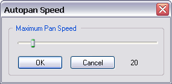

If this option is selected, the capture area will follow the cursor to wherever it goes during recording. This has the effect of making the screen capture to occur at the region with the most action.
(From the main menu, choose Options->Enable Autopan)
(From the main menu, choose Options->Autopan Speed)
Use this to control the maximum speed at which the capture area follows the mouse. The value is measured in screen pixels.
